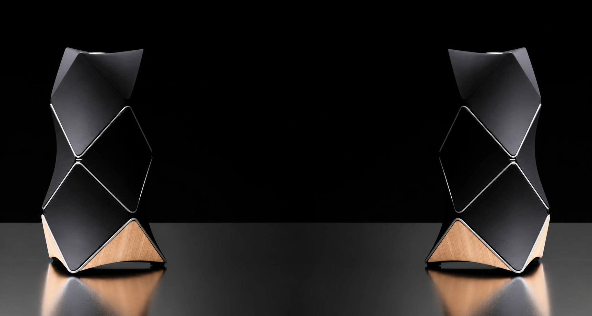
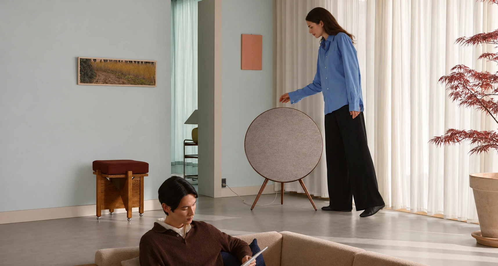
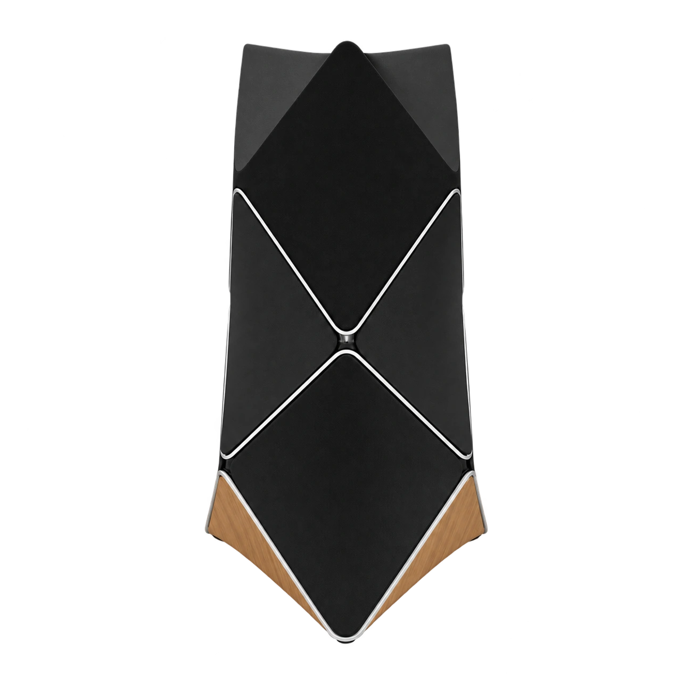
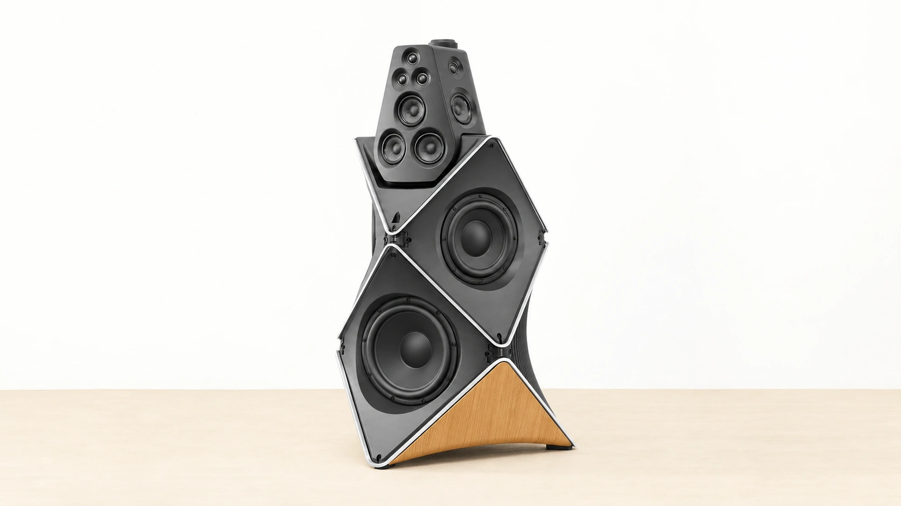
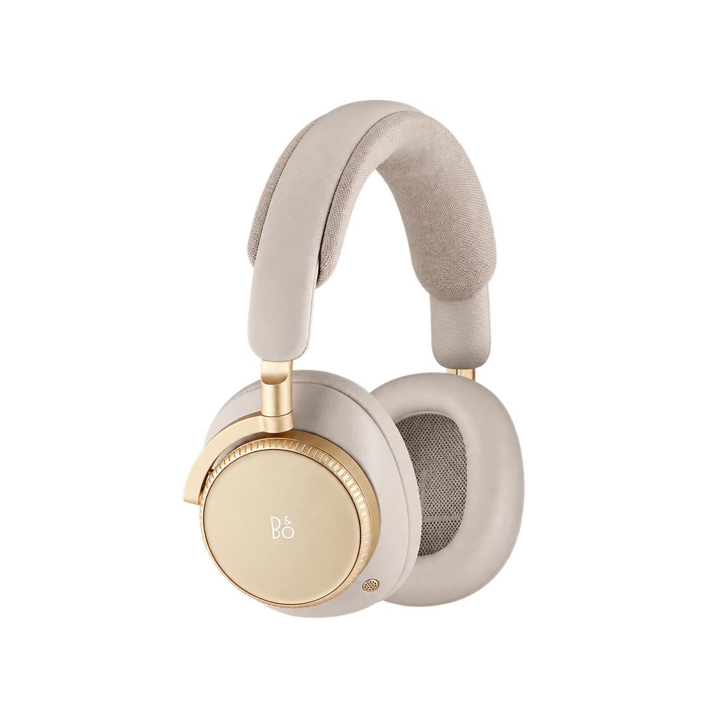
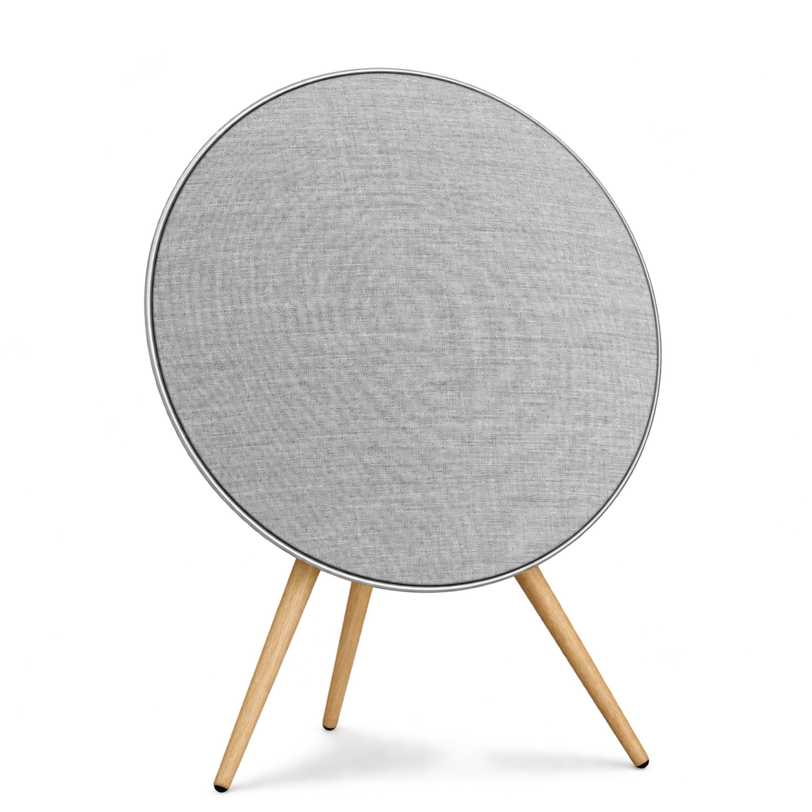
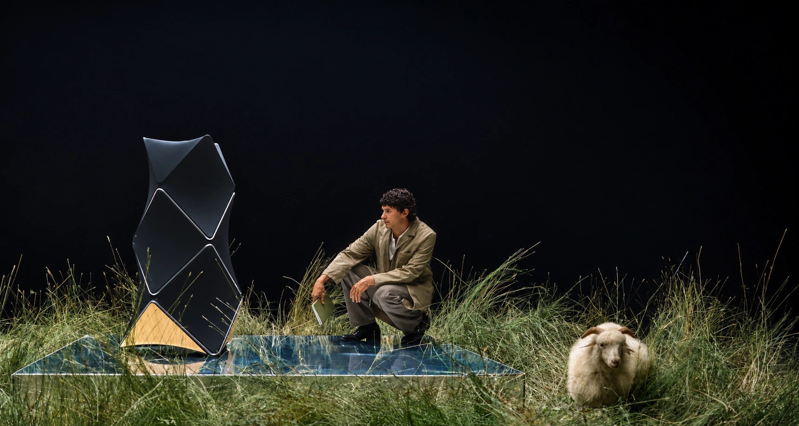

BANG & OLUFSEN · THE FUTURE OF SOUND
Sound, reimagined.
Where acoustic innovation
meets timeless design.
Some things
are heard.
Others are felt.
Sound has a shape.
A texture. A presence.
We explore the meeting point of acoustic innovation and Scandinavian design. Objects that become part of your space. Experiences that stay with you.
Discover the art of listening
SCULPTURAL SOUND. A QUIETER KIND OF STATEMENT.Every detail.
By design.


A sculptural arrangement of Scan-Speak drivers, engineered to shape sound around you.
Sound calibrated to the acoustics of your room. Precision that feels effortless.
MORE THAN A FREQUENCY. A FEELING.
Designed
to move you.
Let the world fall away.
Find your own resonance.
AN ABSTRACT VISUAL & SYNTHESIZED SOUNDSCAPE
MOVE YOUR CURSOR. CHANGE THE ATMOSPHERE.

BEOPLAY H100 · HOURGLASS SANDNothing
between you
and the music.
Precision titanium drivers. The softness of leather. A personal space for the music that matters.
Meet Beoplay H100DETAIL YOU CAN HEAR.
Extraordinary.
In every form.

Beosound A9
An iconic silhouette. Seven drivers. A powerful presence that belongs in your home.
NATURAL ALUMINIUM